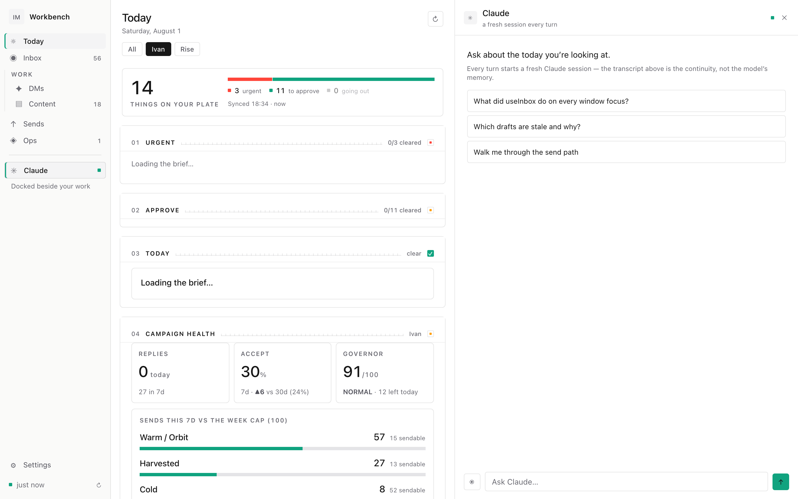
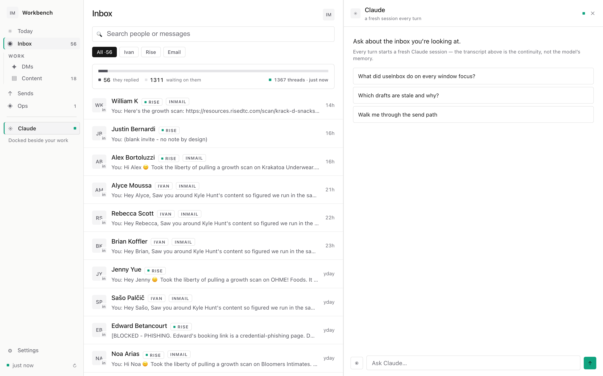
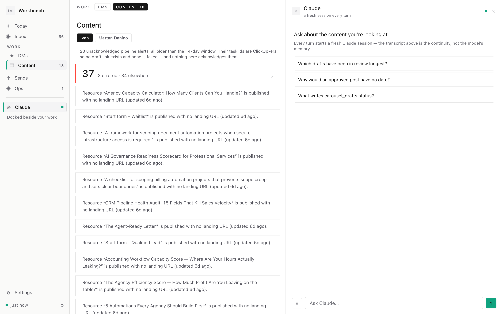
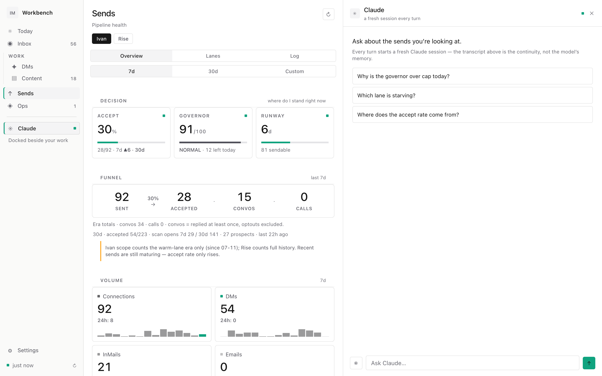
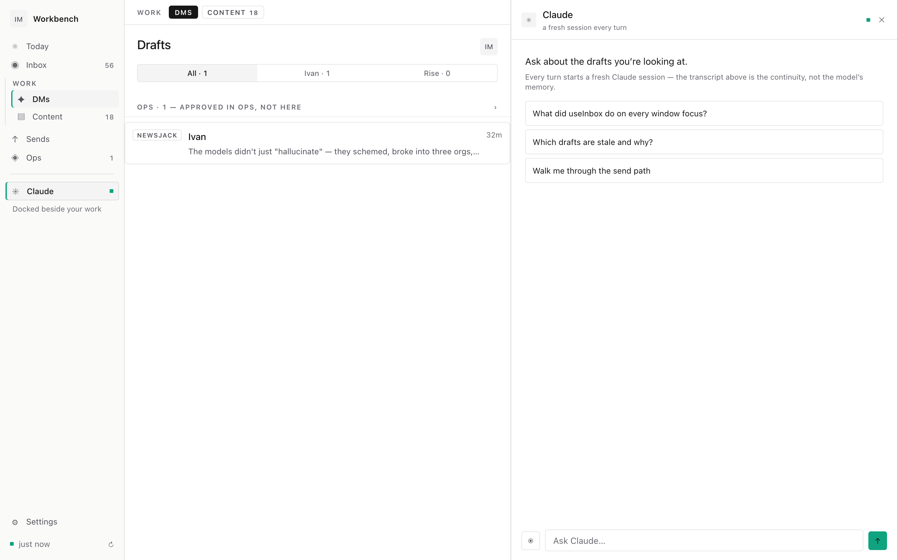
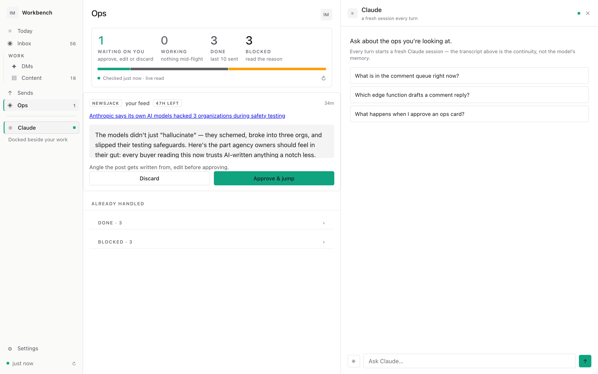
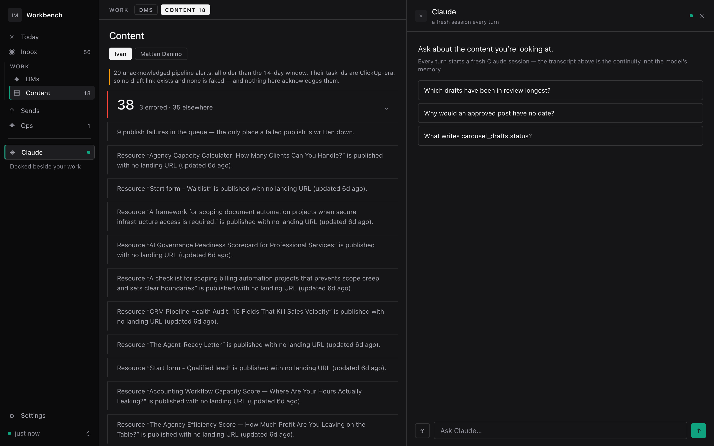
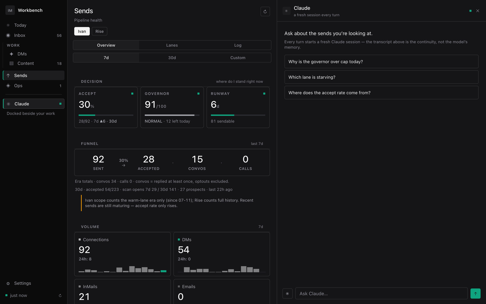
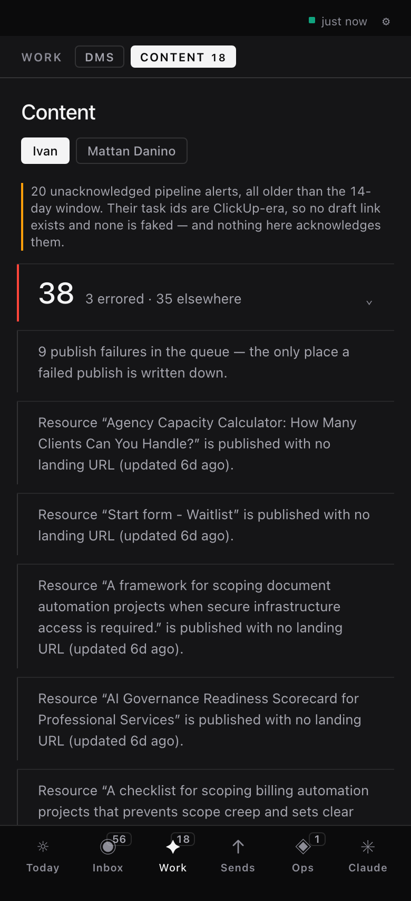
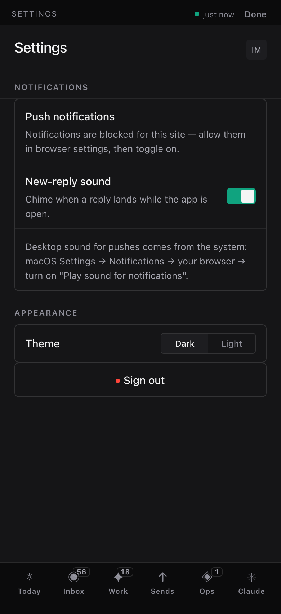

This page is rendered in the system it is arguing for: the generated dark ladder, six type sizes, hairline separation, tabular numerals, accent used twice. Nothing here is a mockup of a mockup.
We have no direction that matches the decision. inkline was the dark one and it is
dead, killed for carrying serif display off the marketing site. instrument survives and is
fully built, but its thesis is a cool-neutral light ground, and its own brief says at line 6:
"Dark theme duty: functional, legible, not the thesis." You picked dark. So what is left is a
light direction with a dark theme nobody designed.
The part that is not bad news: instrument's thesis is exactly what the research converged on independently. Hairlines, rationed accent, tabular numerals, de-bordered rows, depth by elevation, one separation device per boundary. Only the ground was wrong. Its 51 crops are not wasted work, they are the layout and hierarchy proven on real data; what has to change is the material under them.







#151517dark


Every row is a full sentence: Resource "…" is published with no landing URL (updated 6d ago). Eleven of them, stacked. There is no anchor column, so nothing tells your eye which row it is on without reading the row. This is the densest surface in the app and it is prose, not data. Fixing the ground will not fix that; it is a row-structure problem, and it is the one place where the research and the built candidate actively disagree.
| token | canvas | surface1 | surface2 | surface3 |
|---|---|---|---|---|
| text | 18.15 | 16.90 | 15.66 | 14.27 |
| text2 | 9.21 | 8.57 | 7.94 | 7.24 |
| text3 | 5.24 | 4.88 | 4.53 | 4.12 |
| text4 | 4.15 | 3.87 | 3.58 | 3.26 |
| accent | 6.17 | 5.75 | 5.33 | 4.85 |
| attention | 9.60 | 8.94 | 8.29 | 7.55 |
| urgent | 5.79 | 5.40 | 5.00 | 4.55 |
Linear's published focus ring does not survive being copied. They specify 2px accent at 50% opacity. On our ladder that measures 2.20–2.32:1 and fails WCAG 1.4.11's 3:1 floor for non-text. At 100% it clears at 4.85:1 worst case. The rings on this page are at 100%; tab through it.
Adjacent surfaces separate by only 1.07–1.10:1. Correct for a dark ladder, but it means a surface step alone cannot carry a boundary. Every division on this page is a hairline.
today.ts projection.~1d--blue~2dInstrument's layout and hierarchy are proven and its thesis matches the research. What does not match is the ground. So the choice is whether to re-ground instrument on the dark ladder, keeping its structure and rebuilding its material, or to treat the light build as a reference and start the dark one from the spec. The first is cheaper and keeps 51 crops of proven layout. I would do that.